pacman::p_load(tidyverse, ggthemes, patchwork, datasauRus, gganimate, gifski)
mystyle <- list (# ggplotのテーマ
theme_few(),
theme(
text = element_text(
size=16, # フォントサイズ
family = "HiraKakuProN-W3" # ヒラギノフォント
)
)
)3 統計
前章で学習したように，ファイナンスではいろいろな理由から，資産価値それ自体より資産価値の変化率，すなわちリターン(return)で議論することが多いです。 ここで，リターンの定義を再度確認します。
株式リターン
資産iのt期の(配当落ち)日次リターンr_{i,t}は， \begin{aligned} r_{i,t} = \frac{P_{i,t} - P_{i,t-1}}{P_{i,t-1}} = \frac{P_{i,t}}{P_{i,t-1}} - 1 \end{aligned}
と定義されています。 ここで，
- Pは資産価値(株価，債券価格，地価など)
- iは銘柄，
- tは時点や期間
を表してます。
では，トヨタ自動車の終値の日次データを用いて，株式リターンの値動きをグラフにしてみましょう。 ggplotパッケージのgeom_line()を用いて折れ線グラフを作成します。
df <- read_csv("data/stock_data.csv") # データの読み込み
df |>
filter(企業名 == "トヨタ自動車") %>% # トヨタ自動車を抽出
ggplot() + aes(x = date, y = 終値) + geom_line() # 折れ線グラフ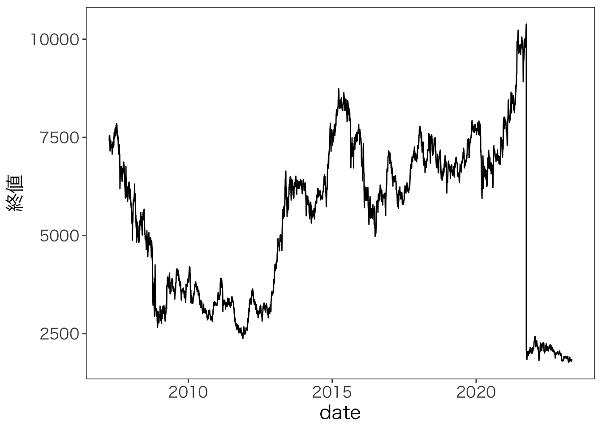
トヨタ自動車の2021年における株価の急落は，株式分割が原因です。 このとき，トヨタ自動車は1株を5株に分割しています。 そのため約10000円だった株価が約2000円と5分の1に下落したのです。
次にこのデータから株式リターンを計算し、折れ線グラフにしてみます。
df <- df %>%
group_by(企業名) %>% # 企業名でグループ化
mutate(
r_daily = 終値 / lag(終値) -1 # リターンを計算
) %>%
filter(r_daily > -0.5) # 株式分割による異常値を除外
df %>%
filter(企業名 == "トヨタ自動車") %>% # トヨタ自動車を抽出
ggplot() + aes(x = date, y = r_daily) + geom_line() # 折れ線グラフ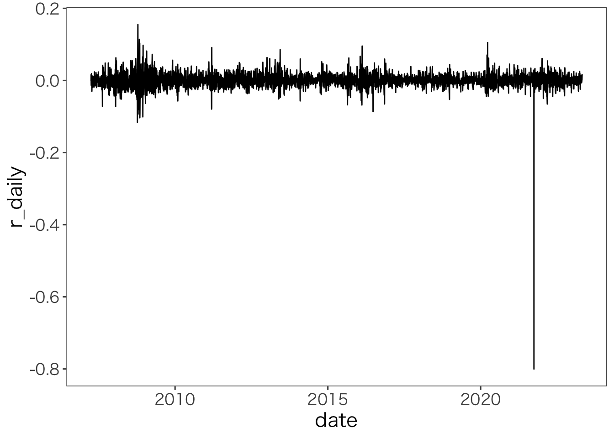
2021年の株式分割時の下落が異常な値となっていますが，それ以外の値動きは0を中心にランダムになっていることが分かります。
3.1 期待値と分散(標準偏差)の推定
ある資産の価格やリターンを確率変数とみなしたとき，その背後にある確率分布の特徴を表す指標(つまり母数)を実際に観察することは不可能です。母集団のパラメータは観察不能なのです。 しかしながら，過去の観測値の集合であるデータを用いて，確率分布の特徴やそれらの指標(期待値，分散，標準偏差)の推定値を求めることはできます。そこで，推定値を用いて確率変数の特徴を考察するようにします。
例えば，データから作成されるヒストグラム(histogram)や度数分布表は確率変数を特徴付ける確率分布の仮想となります。 期待値，分散，標準偏差の推定値は，確率変数を特徴付ける母平均(期待値)，母分散，母標準偏差の仮想です。 この期待値，分散，標準偏差の推定値は，より具体的に標本平均(期待値)，標本分散，標本標準偏差とよばれます。 ただし「標本」という言葉はしばしば省略されることが多いので注意しましょう。
(標本)単純平均
観測値x_kの単純平均値は， \begin{aligned} \bar X = \frac 1T \sum_{k=1}^T x_k \end{aligned} となる。 ここでTは観測値の数(これを標本サイズという)を表します。
t-1からt-Tまでの期間における資産iの標本期待(平均)リターン\bar r_iは，
\begin{aligned} \bar r_i = \frac 1T \sum _{k=1}^T r_{i,t-k} \end{aligned} となります。
Rの基本関数だとmean()で計算できます。 たとえば，トヨタの株式リターンの平均は次の通りです。
mean(df$r_daily[df$企業名 == "トヨタ自動車"], na.rm = TRUE)[1] 0.000225068このコードの意味するところは，mean()で引数のベクトルの平均を計算しています。 引数のdf$r_dailyとすることで，dfというデータフレームのr_dailyという変数をしていしています。 さらに，[df$企業名 == "トヨタ自動車"]と続けることで，dfの企業名が"トヨタ自動車"となる行のみを抽出しています。 最後のna.rm = TRUEは，平均を出そうとするベクトルに欠損値が含まれている場合，その欠損値を除外して平均を計算することを意味しています。
計算されたトヨタ自動車の期待リターンは，2.145399e-05となりました。 これは指数表記で科学研究よく利用される書き方です。 数式で表現すると，
2.145399 \times 10^{-5}
のことで，具体的には，0.00002145399ということです。
標本(不偏)分散は，観測値x_kとその標本平均\bar Xからの乖離の単純平均である。
標本分散
\begin{aligned} s^2 [X] = \frac{1}{T-1} \sum _{k=1} (x_k - \bar X)^2 \end{aligned}
t-1からt-Tまでの期間における資産iのリターンの標本分散s^2[r_i]は，次の通りである。
\begin{aligned} s^2[r_i] = \frac{1}{T-1} \sum_{k=1}^T ( r_{i,t-k} - \bar r_i)^2 \end{aligned}
Rの基本関数だとvar()で計算できます。 たとえば，トヨタの株式リターンの標本分散は次の通りです。
var(df$r_daily[df$企業名 == "トヨタ自動車"], na.rm = TRUE)[1] 0.0003337524標本標準偏差は，分散の平方根です。
標本標準偏差
\begin{aligned} s [X] = \sqrt{s^2[X]} \end{aligned}
t-1からt-Tまでの期間における資産iのリターンの標本標準偏差s[r_i]は，次の通りである。
\begin{aligned} s [r_i] = \sqrt{s^2 [r_i]} \end{aligned}
Rの基本関数で標準偏差を返す関数はsd()です。 たとえば，トヨタの株式リターンの標本標準偏差は次の通りです。
sd(df$r_daily[df$企業名 == "トヨタ自動車"], na.rm = TRUE)[1] 0.01826889データから確率分布の特性を表す指標にはほかにも色々あります。 たとえば尖度や歪度などです。尖度(skewness)とは，確率分布の尖り具合を表す指標です。 歪度(kurtosis)とは，確率分布の裾の重さを表す指標です。
多様な統計量から分布の特徴を捉えることも重要ですが、グラフの1つであるヒストグラム(histogram)は数値よりも直観的に分布の形を確認できるため，まず度数分布表やヒストグラムを作成することをお勧めします。 Rの基本関数でヒストグラムを作成するにはhist()を用います。 いままでと同様に、トヨタ自動車の株式リターンのヒストグラムを作成してみましょう。
# par(family = "HiraKakuProN-W3") # macの文字化け対策 winの人はコメントアウト
hist(df$r_daily[df$企業名 == "トヨタ自動車"]) # 基本関数でヒストグラム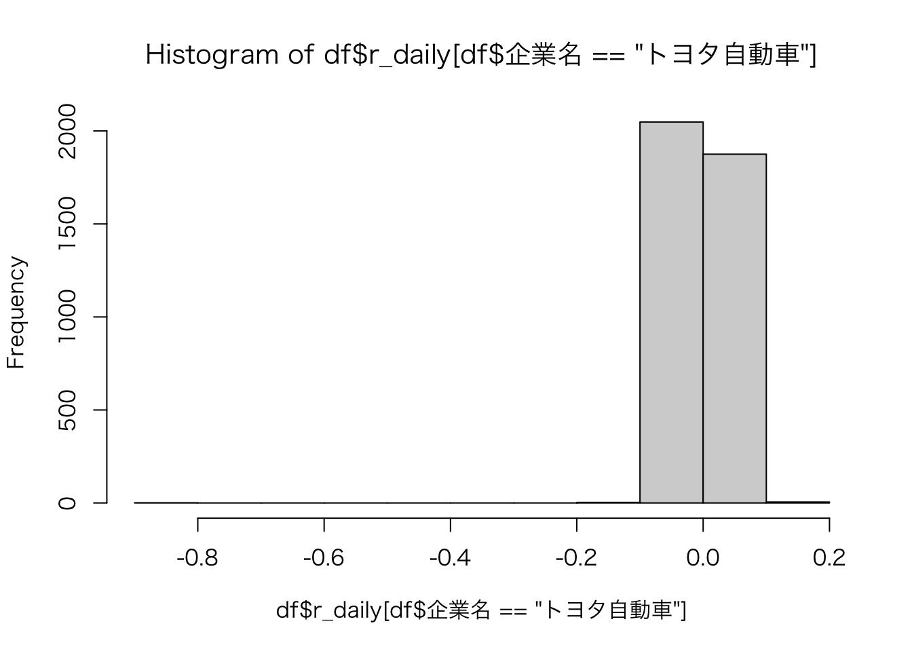
これでももちろんヒストグラムを作成することはできるのですが、 よりキレイなグラフを作成したいなら、tidyverseのggplot2パッケージが便利です。 ただし，ggplot2で利用できるデータの型はdata.frame型に限るので注意しましょう。
まず、作図のためのデータを用意します。 トヨタ自動車の日次リターンと日付を抽出し、data.frame型に変換して，df_toyotaという変数に格納します。
df_toyota <- df %>%
filter(企業名 == "トヨタ自動車") %>%
select(date, r_daily)つぎに，ggplot()関数で作図してみます。 ggplot2パッケージでは，以下の要素を指定してグラフを作ります。
ggplot()関数でデータを指定aes()関数でx軸とy軸の変数を指定geom_***関数でグラフの種類を指定
たとえば，geom_histogram()関数を用いるとヒストグラムを作成できます。
g <- ggplot(df_toyota) + # データを指定
aes(x = r_daily) + # 変数を指定
geom_histogram() # グラフを指定
g <- g + xlim(-0.1, 0.1) # x軸の範囲を指定
g <- g + xlab("日次リターン") + ylab("度数") # x軸とy軸のラベルを指定
print(g) # 出力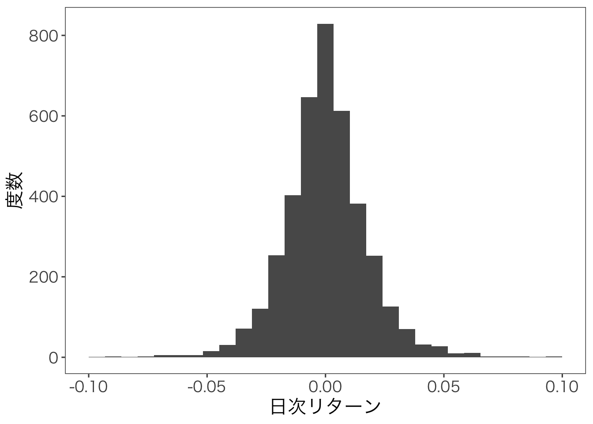
正規分布のように左右対称の分布になっていることが分かります。
ここまでの学習から，1変数の離散確率変数の特徴を表す指標として，期待値，分散，標準偏差を学習し，またデータの分布を視覚的に把握するグラフとしてヒストグラムの作り方を学習しました。 それぞれの定義，計算方法，作図方法を理解し，説明できるようになっていれば，この節は終了です。 次節から，2変数間の関係を表す統計量について学習します。
3.2 共分散と相関係数の推定
2つの確率変数間の特徴を表す指標として、共分散(covariance)と相関係数(correlation coefficient)を学習します。 いま，観察される確率変数XとZの実現値の組(x_i, z_i), i = 1, \dots , Nがデータとして手元にあるとします。 ここで，Nは標本サイズを表しています。つまりN個のデータの組があるということです。 このN個のデータを座標平面上で表したものを散布図(scatter diagram)といいます。 たとえば、トヨタ自動車と日産自動車の株式リターンの散布図を作成してみましょう。
df %>%
filter(企業名 == "トヨタ自動車" | 企業名 == "日産自動車") %>%
select(企業名, date, r_daily) %>%
pivot_wider(names_from = 企業名, values_from = r_daily) %>%
ggplot() + aes(x = トヨタ自動車, y = 日産自動車) + geom_point()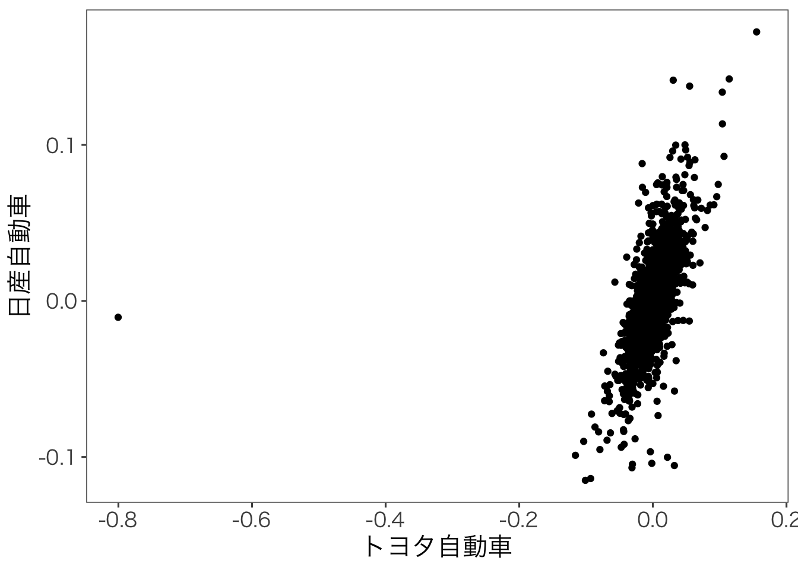
この散布図から，トヨタ自動車と日産自動車の株式リターンはどちらかの株式リターンが増加したら，もう片方も増加する，という関係にあるといえます。 この関係の強さを数値で表したものが共分散や相関係数となります。 共分散は，次のように定義される。
共分散
共分散の定義は，
\begin{aligned} s_{XZ} = \frac{1}{N} \sum_{i=1}^N (x_i - \bar X)(z_i - \bar Z) \end{aligned}
共分散は，XとZの標本平均からの乖離の単純平均となります。 図で示すと，次のようになります。
df %>%
filter(企業名 == "トヨタ自動車" | 企業名 == "日産自動車") %>%
select(企業名, date, r_daily) %>%
pivot_wider(names_from = 企業名, values_from = r_daily) %>%
ggplot() + aes(x = トヨタ自動車, y = 日産自動車) + geom_point() +
geom_vline(xintercept = mean(df$r_daily[df$企業名 == "トヨタ自動車"], na.rm = TRUE), linetype = "dashed",color = "red") +
geom_hline(yintercept = mean(df$r_daily[df$企業名 == "日産自動車"], na.rm = TRUE), linetype = "dashed", color = "red")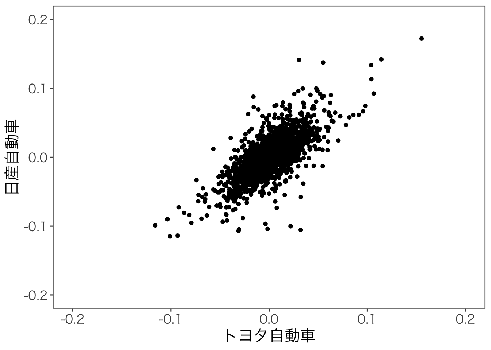
この第1象限(右上)に位置する実現値の組(x_i, z_i)は，x_i > \bar Xかつz_i > \bar Zであり，また第3象限(左下)の領域の点もx_i < \bar Xかつz_i < \bar Zであるため，(x_i - \bar X)(z_i - \bar Z)は正の値をとります。 つまり，第1象限と第3象限の点の組み合わせが多いとき，共分散の値を正にする方向に寄与し，第2象限と第4象限は負に寄与します。 よってトヨタ自動車と日産自動車の株式リターンの共分散は正になることが予想されます。 では計算してみましょう。
df_cov <- df %>%
filter(企業名 == "トヨタ自動車" | 企業名 == "日産自動車") %>%
select(企業名, date, r_daily) %>% # 変数を選択
pivot_wider(names_from = 企業名, values_from = r_daily) %>% # 横データに
drop_na() # 欠損値を削除
(cov_toyota_nissan <- cov(df_cov$トヨタ自動車, df_cov$日産自動車))[1] 0.0003021892トヨタ自動車と日産自動車の株式リターンの共分散は3^{-4}となり，正の値であることが分かりました。 共分散は2変数間の関係をします尺度ですが、その値の大きさは単位に依存するという問題があります。 そこで、共分散を標準化したものが相関係数です。 相関係数は、共分散を各変数の標準偏差で割ったものです。
相関係数
相関係数の定義は，
\begin{aligned} \rho_{XZ} = \frac{\mathbb{COV}[XZ]}{s[X] \times s[Z]} \end{aligned}
相関係数は変数の単位に依存せず、-1 \leq \rho_{XZ} \leq 1の値をとる尺度で、2変数間の関係の強さを表します。 相関係数が1に近いほど正の相関が強く、-1に近いほど負の相関が強いといえます。 また、相関係数が0に近いほど2変数間の関係は弱いといえます。
標本相関係数\rho _{XZ}が0.5の場合、以下のような散布図になります。
X <- rnorm(1000, mean = 0, sd = 1)
Z <- 0.5 * X + rnorm(1000, mean = 0, sd = 1)
df <- data.frame(X, Z)
ggplot(df) + aes(x = X, y = Z) + geom_point()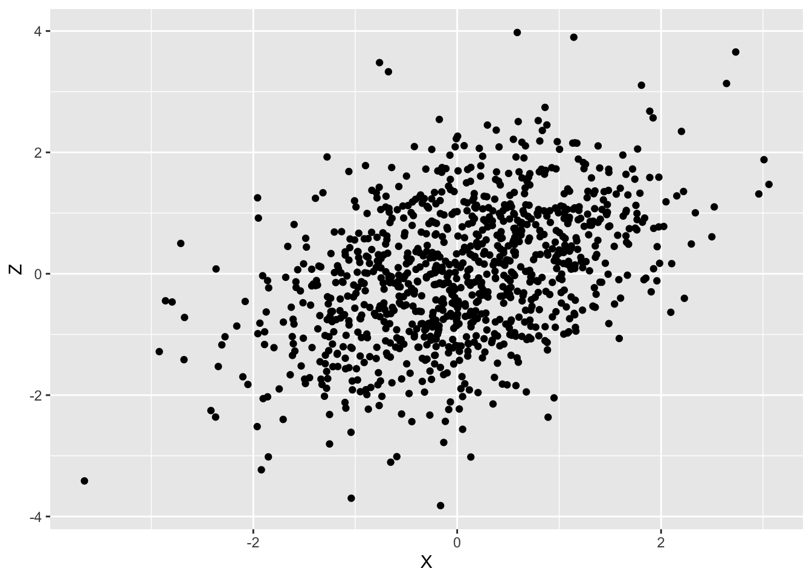
標本相関係数\rho _{XZ}が0.90の場合、以下のような散布図になります。
X <- rnorm(1000, mean = 0, sd = 1)
Z <- 0.9 * X + rnorm(1000, mean = 0, sd = 1)
df <- data.frame(X, Z)
ggplot(df) + aes(x = X, y = Z) + geom_point()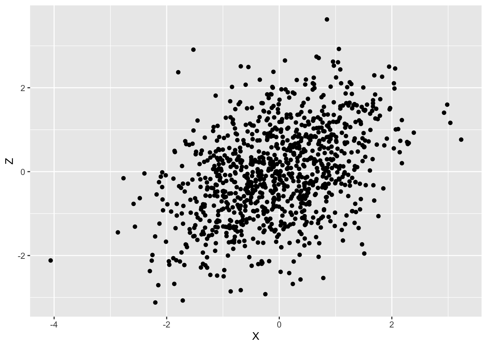
標本相関係数\rho _{XZ}が-0.6の場合、以下のような散布図になります。
X <- rnorm(1000, mean = 0, sd = 1)
Z <- -0.6 * X + rnorm(1000, mean = 0, sd = 1)
df <- data.frame(X, Z)
ggplot(df) + aes(x = X, y = Z) + geom_point()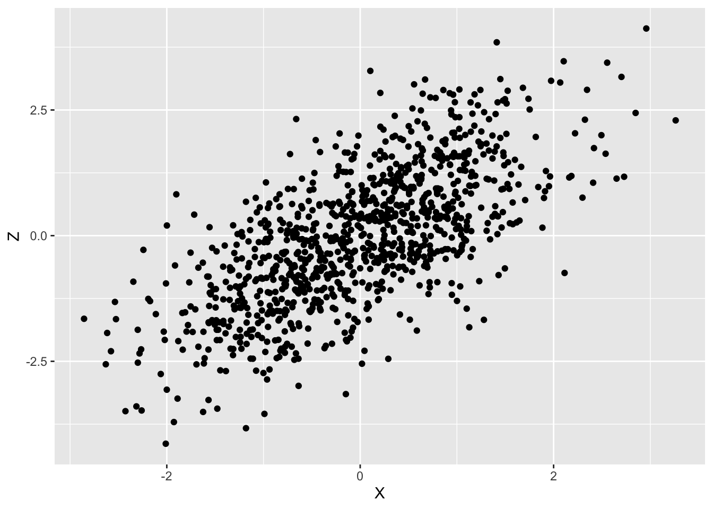
無相関，つまり標本相関係数\rho _{XZ}が0の場合、以下のような散布図になります。
X <- rnorm(1000, mean = 0, sd = 1)
Z <- rnorm(1000, mean = 0, sd = 1)
df <- data.frame(X, Z)
ggplot(df) + aes(x = X, y = Z) + geom_point()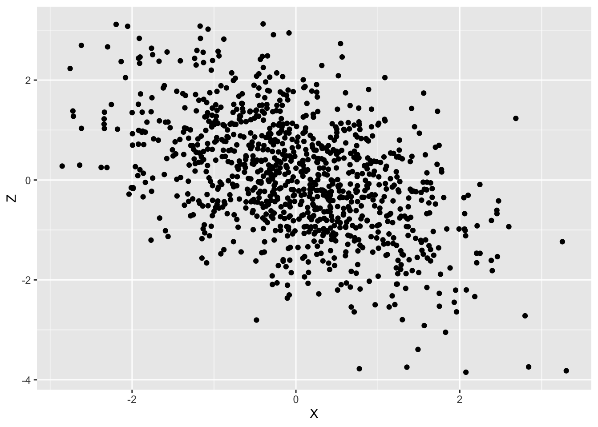
注意しないといけないのは，相関係数が線形関係を前提とした尺度であることです。もし2変数の関係が非線形である場合は，相関係数は役に立ちません。 たとえば，いかのような有名な図があります。
ggplot(datasaurus_dozen) + aes(x = x, y = y, color = dataset) + geom_point() + facet_wrap(~dataset, ncol = 3) + theme_bw() + theme(panel.grid = element_blank())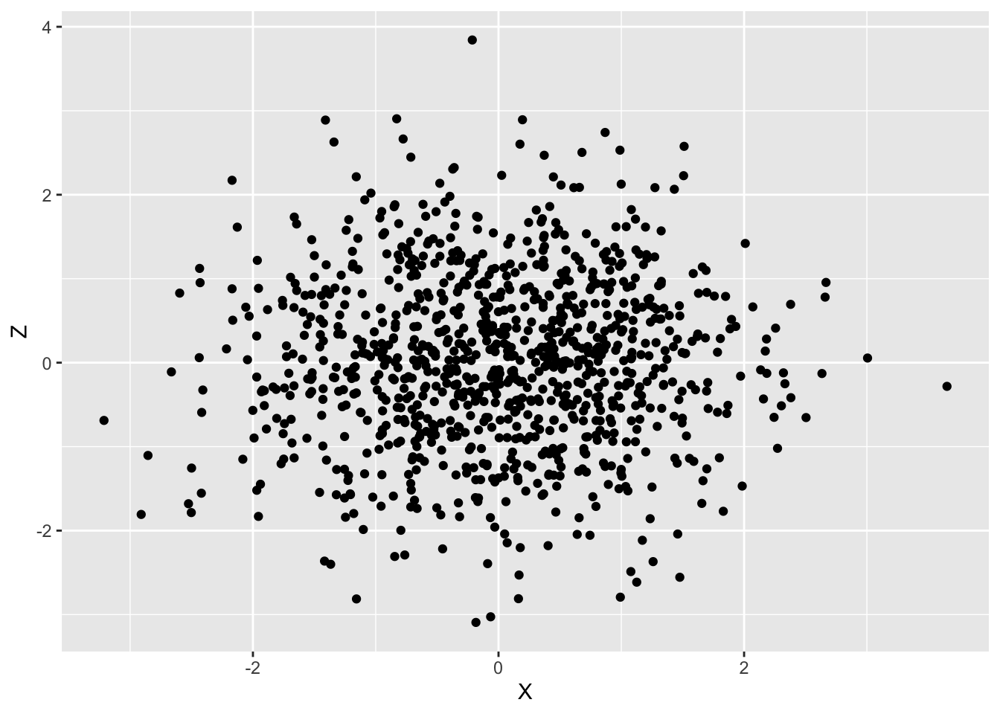
アニメーションにするとこうなります。 gganimateパッケージのtransition_states()関数を用いてアニメーションを作成しています。
この散布図のデータの基本統計量はほぼ同じで，相関係数はほぼ0のデータですが，実際に散布図として可視化してみると全く異なるデータであることがわかります。 つまりは，手元のデータは一度可視化して，そのデータの特徴をつかむことが重要なのです。
3.3 変数のアフィン変換
線形変換(linear transformation)とは，線形性をもつ変換で， f(\boldsymbol{x}) = \boldsymbol{A}\boldsymbol{x} と表し，線形変換は，
- 直線を維持したまま，
- 原点を固定
した変換となります。この線形変換fに平行移動gを合成した変換をアフィン変換(affine transformation)といいます。
確率変数の一次変換あるいは線形変換、より一般的にはアフィン変換について学習します。 一般に確率変数Xのアフィン変換は以下のように表されます。
\begin{aligned} y = f \circ g (\boldsymbol{x}) = \boldsymbol{A}\boldsymbol{x} + \boldsymbol{b} \end{aligned}
以下では，ある確率変数Xに対して，行列\boldsymbol{A}がスカラーa，ベクトル\boldsymbol{b}がスカラーbの場合を考えます。 つまり， Y = a X + b である場合について考えます。 このとき，変換後の確率変数Yの期待値と分散は以下のようになります。
\begin{aligned} \mathbb{E}[Y] &= a\mathbb{E}[X] + b \\ \mathbb{V}[Y] &= a^2 \mathbb{V}[X] \\ \mathbb{SD}[Y] &= |a| \mathbb{SD}[X] \end{aligned}
以下の例で確認してみましょう。 従業員9名の1ヶ月の労働時間Xが以下の表に示されている。
labor <- data.frame(
従業員 = c("A","B","C","D","E","F","G","H","I"),
労働時間 = c(30,45,50,35,60,70,55,60,45)
)
knitr::kable(t(labor), booktabs = TRUE)| 従業員 | A | B | C | D | E | F | G | H | I |
| 労働時間 | 30 | 45 | 50 | 35 | 60 | 70 | 55 | 60 | 45 |
総賃金Y_2は毎月の固定給100千円に時間給Y_1(時給3千円)を合わせた額として支給される。 すなわち，Y_2 = 100 + Y_1 = 100 + 3Xの関係が成立している。 したがって，各従業員の労働時間と賃金は以下の通りとなる。
labor <- labor %>%
mutate(
時間給 = 労働時間 * 3,
総賃金 = 100 + 時間給
)
knitr::kable(t(labor), booktabs = TRUE)| 従業員 | A | B | C | D | E | F | G | H | I |
| 労働時間 | 30 | 45 | 50 | 35 | 60 | 70 | 55 | 60 | 45 |
| 時間給 | 90 | 135 | 150 | 105 | 180 | 210 | 165 | 180 | 135 |
| 総賃金 | 190 | 235 | 250 | 205 | 280 | 310 | 265 | 280 | 235 |
この表からわかることは，Y_1=3Xであることから，Y_1の標本平均と標本標準偏差はともにXの標本平均と標本標準偏差の3倍になっている，ということです。 つまり，標本平均と標本標準偏差はともに比例的に変化していることがわかります。
このデータを元に，労働時間，時間給，総賃金の標本平均や標本標準偏差を計算してみましょう。
labor_summary <- labor %>%
summarise(
平均 = c(mean(労働時間), mean(時間給), mean(総賃金)),
標準偏差 = c(sd(労働時間), sd(時間給), sd(総賃金))
)
labor_summary$変数名 <- c("労働時間", "時間給", "総賃金")
labor_summary <- labor_summary %>%
select(変数名, 平均, 標準偏差)
knitr::kable(labor_summary, booktabs = TRUE, digits = 2)| 変数名 | 平均 | 標準偏差 |
|---|---|---|
| 労働時間 | 50 | 12.75 |
| 時間給 | 150 | 38.24 |
| 総賃金 | 250 | 38.24 |
総賃金はY_2 = 100 + Y_1であるため，総賃金Y_2の標本平均は時間給Y_1の標本平均に100を加えたものになります。 また総賃金Y_2の標本標準偏差は、時間給Y_1と同じである。
3.4 変数の線形結合
より一般的に線形結合について考えてみましょう。 いま、k個の変数X_1,\dots ,X_kから一次結合Y = c_0 + c_1 X_1 + \cdots + c_k X_kで表される変数Yにおいて(ただしcはパラメータ)，データから計算される変数Yの標本平均，標本分散(標本標準偏差)に対して次の関係が成立します。
\begin{aligned} \mathbb{E}[Y] &= \mathbb{E}[c_0 + c_1 X_1 + \cdots + c_k X_k ]\\ &= c_0 + c_1 \mathbb{E}[X_1] + \cdots + c_k\mathbb{E}[ X_k ] \\ &= c_0 + c_1 \bar{X}_1 + \cdots + c_k\bar{X}_k \\ \mathbb{V}[Y] &= \mathbb{V}[c_0 + c_1 X_1 + \cdots + c_k X_k ]\\ &= c_0 + \mathbb{V}[c_1 X_1] + \cdots + \mathbb{V}[c_k X_k ] + \sum _{i \not = j}^k \sum _{j \not = i}^k c_i c_j s_{ij}(X_i,X_j)\\ &= c_0 + c_1^2\mathbb{V}[X_1] + \cdots + c_k^2\mathbb{V}[X_k ] + \sum _{i \not = j}^k \sum _{j \not = i}^k c_i c_j s_{ij}(X_i,X_j) \mathbb{V}[Y] &= a^2 \mathbb{V}[X] \\ \mathbb{SD}[Y] &= |a| \mathbb{SD}[X] \end{aligned}
\begin{aligned} \bar Y &= c_0 + c_1 \bar X_1 + \cdots + c_k \bar X_k \\ s^2[Y] &= c_1^2 s^2[X_1] + \cdots + c_k^2 s^2[X_k] + \sum _{i \not = j}^k \sum _{j \not = i}^k c_i c_j s_{ij}(X_i,X_j) \end{aligned}
ここで，\bar X_i，s^2[X_i], s_{ij}(X_i,X_j)はそれぞれ標本平均，標本分散，標本共分散を表す。
k=2の場合，
\begin{aligned} \bar Y &= c_0 + c_1 \bar X_1 + c_2 \bar X_2 \\ s^2[Y] &= c_1^2 s^2[X_1] + c_2^2 s^2[X_2] + 2 c_1 c_2 s_{12}(X_1,X_2) \end{aligned} となる。
例2
k=2のケースで，Y=0.5X_1 + 0.5 X_2の期待値および分散を求める。 ただし，\bar X_1 = 0.07，s^2[X_1] = 1.48，\bar X _2 = -0.02，s^2 [X_2] = 1.46である。
無相関(s _{ij} (X_i,X_j) = 0)のケース \begin{aligned} \bar Y &= 0.5 \times 0.07 + 0.5 \times - 0.02 = 0.025\\ s^2 [Y] &= 0.5^2 \times 1.48 + 0.5^2 \times 1.46 + 2 \times 0.5 \times 0.5 \times 0 = 0.735 \end{aligned}
Yの分散は，X_1とX_2の分散よりも小さい。
負の相関($s _{ij}(X_i,X_j) = -1.46 $)のケース
\begin{aligned} \bar Y &= 0.5 \times 0.07 + 0.5 \times - 0.02 = 0.025\\ s^2 [Y] &= 0.5^2 \times 1.48 + 0.5^2 \times 1.46 + 2 \times 0.5 \times 0.5 \times -1.46 = 0.005 \end{aligned}
Yの分散は，X_1とX_2の分散よりも小さい。
X_1とX_2の共分散は，Yの分散に影響を与える。